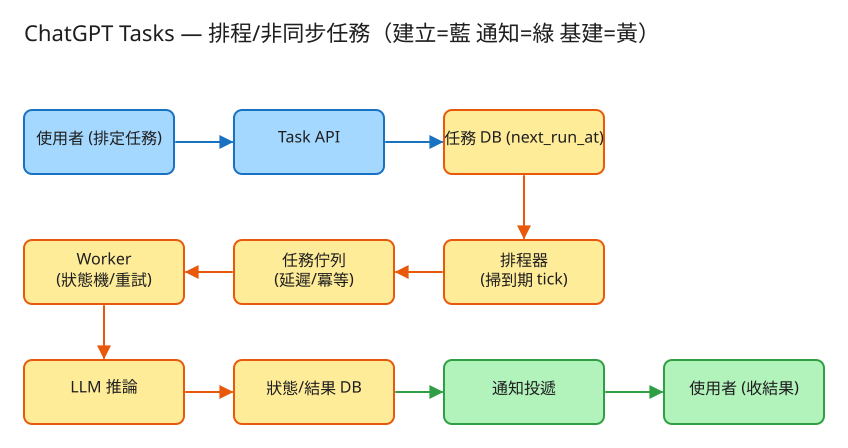

E AI/LLM 看故事就懂 輕鬆讀 25 分鐘
你可以叫 ChatGPT「每天早上 7 點，幫我把今天最重要的科技新聞摘成 3 條」， 然後你就不管它了。隔天早上一睜眼，摘要已經躺在你手機裡。
它怎麼做到的？你沒有在早上 7 點打開 App 按按鈕，可是事情就是準時發生了。 這套系統就是在當你的「私人秘書」：你交代一件「之後才要做、或要反覆做」的事，它記下來、時間到了自己去做、做完回報給你。
很多人第一個疑問是：「我自己時間到再叫它做不就好了？幹嘛搞這麼複雜？」關鍵在一個你早就懂的生活經驗——
差別在於「誰來盯時間」。如果要你（或你的 App）一直開著、一直盯著，那太累也太脆弱（你關機了怎麼辦？）。 排程系統把「盯時間」這件事接手過去，讓你登記完就能放手。
而且這個秘書一次要服務幾千萬人，每個人都登記了好幾個鬧鐘。所以難的不是「設一個鬧鐘」， 而是「同時看管幾千萬個鬧鐘，每個都要準時、不能漏、也不能重複叫」。
💭 停一下：如果有 2000 萬個任務，系統要怎麼知道「現在這一刻有哪些該做了」？難道每秒把 2000 萬個全部翻一遍嗎？
next_run_at 索引。
別被「系統」嚇到。整件事其實就是闖 3 關，一關一關來：
你登記「每天早上 7 點」，系統不會傻傻一直問「到了沒？到了沒？」。它把這件事放進一個會按時間排隊的清單裡。
所以「排程」的本質就是：把「未來才要做的事」先收著，時間到了才丟出來給工人做。 週期任務（每天 7 點）做完一次，馬上算出「下一次是明天 7 點」再排回去——像鬧鐘關掉後自動設好明天的。
時間到、任務被丟出來了，由一群工人（worker）接手：去叫 AI 把新聞摘要寫出來。 一個任務從登記到完成，會經過好幾個階段。
我們的任務也一樣，有固定的幾個狀態：待辦 → 執行中 → 完成（失敗就走「重試」或最後判「失敗」）。 這套「只能照規矩一步步走的狀態流程」就叫狀態機。有了它，你隨時查任務「現在到哪了」都清清楚楚。
叫一次 AI 是要花錢的（也會發一次通知）。如果系統不小心把「今天 7 點的摘要」叫了兩次，你會被收兩次費、收到兩則一樣的通知。
這個「同一件事重複來，第二次自動被擋掉、結果不變」的特性，工程上叫 冪等。 搭配「做不成就重試」（網路抖一下、AI 忙線）就很穩：寧可多試幾次也別放生，但靠那張「唯一條碼」保證真正成功的只算一次。
工程上的「取捨」聽起來很抽象。換個方式記：這個系統最怕三件事，每個設計都是為了避開某個「怕」。

✏️ 用 Excalidraw 開啟編輯（diagram.excalidraw）白話導讀，跟著資料的旅程走一遍：
看完上面，這些詞你其實都已經懂了，這裡只是把「工程術語 ↔ 白話」對起來，Part 2 會用到：
| 工程術語 | 白話解釋 |
|---|---|
| 排程器 (Scheduler) | 系統裡的「鬧鐘管理員」：盯著時間，到了就把任務叫醒 |
| cron 表達式 | 描述「多久做一次」的暗號，例如 0 7 * * *＝每天 7 點 |
| 延遲佇列 | 郵局的「限時投遞倉庫」：先收著，時間到才放出來 |
| 佇列 (Queue) | 排隊的待辦清單，工人從前面一個個拿來做 |
| worker（工人） | 真正動手做事的人：取任務、叫 AI、回報結果 |
| 狀態機 | 任務的「物流狀態」：待辦→執行中→完成，只能照規矩走 |
| 冪等 (idempotent) | 同一件事重複來，第二次自動被擋，結果不變（門票條碼只認一次） |
| 冪等鍵 | 那張「唯一條碼」＝哪個任務 + 哪個時間點 |
| 重試 / 退避 | 沒成功就再試，而且每次間隔拉長一點，別猛敲 |
| at-least-once | 「至少送一次」：寧可重送也不漏送 |
| 時區 / DST | 「早上 7 點」是你當地時間；日光節約還會差一小時，要算清楚 |
| jitter（抖動） | 故意讓每個人的時間錯開幾秒，避免大家擠同一瞬間 |
| DLQ（死信佇列） | 「怎麼做都做不成」的任務丟進的回收桶，事後檢討用 |
| QPS | 每秒幾筆請求（衡量「多忙」的單位） |
| 水平擴展 | 不夠快就「多找幾個工人一起做」 |
我們估幾個關鍵數字（數字不必背，重點是感受它的「形狀」）：
| 估什麼 | 大概數字 | 所以呢？ |
|---|---|---|
| 總共多少任務 | 1000 萬人 × 每人 2 個 ≈ 2000 萬個 | 掃描不能每次把全部翻一遍，要靠索引 |
| 一天觸發幾次 | 多數每天 1 次 ≈ 2000 萬次/日 | 平均每秒約 230 次，看起來還好… |
| 尖峰多可怕 | 大家都設早上 → 那一刻爆到平常的 10 倍 | 真正難的是「早高峰那一瞬間」 |
| AI 每次多久 | ~3 秒、約 2000 字的量 | 很慢！所以一定要「丟給工人慢慢做」，別卡住排程 |
| 結果要存多久 | 每筆 ~4KB、留 90 天 | 2000萬×90×4KB ≈ 約 7 TB，不少 |
💭 停一下：明明平均每秒才 230 次，為什麼還要這麼擔心？
這題只要記住幾張「點餐單」：
① 建立一個排程任務（最重要）
POST /api/v1/tasks
給我：{ 名稱, 排程("每天7點"/"某時跑一次"), 你的時區, 要叫AI做什麼, 怎麼通知你 }
我回：201「建好了！任務編號 task_123，下次會在明早 7 點跑」注意我回的東西裡有「下次什麼時候跑」（next_run_at）——這就是那個鬧鐘的鈴聲時間，系統靠它來判斷何時該叫醒這個任務。
② 管理任務（暫停 / 刪除）
PATCH /api/v1/tasks/{編號} → { "status": "paused" } 暫停或恢復
DELETE /api/v1/tasks/{編號} → 不想要了，刪掉暫停就像把鬧鐘關靜音：任務還在，但時間到不會響。
③ 查「做得怎樣了」（讀，看歷史與結果）
GET /api/v1/tasks/{編號}/runs → 列出每一次跑的紀錄
GET /api/v1/runs/{單次編號} → { 狀態:"完成", 結果:"今天的新聞摘要…" }這裡看得到任務的「物流狀態」：跑到第幾次、成功還失敗、結果是什麼。
每個任務一列：任務編號、誰的、類型(一次/週期)、排程暗號、時區、要叫AI做什麼、狀態(進行/暫停)、下次跑的時間。
每次觸發一列：單次編號、屬於哪個任務、唯一條碼(任務+時間點)、這次排定的時間、狀態(待辦/執行中/完成/失敗/重試)、試了第幾次、結果、錯誤。
| 哪裡會塞車 | 怎麼拓寬 |
|---|---|
| 一個鬧鐘管理員要看管 2000 萬個鬧鐘 | 把任務分組，每組派一個管理員各看一份（分片）；多請幾個管理員，但用「租約」講好誰管哪份，免得搶著叫同一個 |
| 大家都設「早上 7:00」，那一刻爆量 | 給觸發時間加一點隨機抖動（jitter），把山推平；或分桶錯開 |
| AI 很慢，工人被一個慢任務佔住 | 多請一群工人同時做（水平擴展）；佇列當緩衝；忙不過來就自動增援 |
| 叫 AI 太頻繁被人家限速（429） | 給每個用戶配額；相同的提示快取結果；批次送 |
| 下游壞掉導致大量任務一直失敗重試 | 退避（間隔拉長別猛敲）+ 死信回收桶 + 斷路器（壞太兇就先停手） |
| 同一觸發被重複丟進佇列 | 「唯一條碼」+ 資料庫不准重複，重複的自動被擋 |
「Part 1 的三個怕」是核心取捨。這裡補幾個常被面試官追問的：
讀十遍不如玩一遍。這題有一個真的可以跑的小程式，讓你親眼看到「排程 → 佇列 → 狀態機 + 冪等 / 重試」：
# 啟動（在這題的 demo 資料夾裡）
cd demo
php -S localhost:8011 -t public
# 然後瀏覽器打開 http://localhost:8011玩過 demo 了，來掀開引擎蓋看看「那幾關到底是哪幾段程式做的」。 好消息：核心只有三個小檔，剛好對應前面三關。不用會 PHP，我把程式翻成白話、只留關鍵那幾行，看註解就懂。
排程器每「滴答」一次（tick），就把所有「下次該跑的時間已經 ≤ 現在」的任務撈出來，丟進佇列。就像鬧鐘管理員問一句「有誰時間到了？」。
function tick(現在時間) {
for (每個任務) {
if (任務.下次該跑時間 > 現在時間) continue; // ← 還沒到 → 跳過，動都不用動
// 到期了！發一張「唯一條碼」＝ 任務編號 @ 這個觸發時間點
條碼 = 任務.編號 + "@" + 任務.下次該跑時間
佇列.入列(任務.編號, 條碼) // ← 丟進延遲佇列（限時投遞倉庫）
if (任務是週期型) {
下次 = 下次該跑時間 + 間隔
while (下次 <= 現在時間) 下次 += 間隔 // ← 對齊到未來，當機補跑時不瘋狂連跑
任務.下次該跑時間 = 下次 // 像鬧鐘響完自動設好明天的
} else {
任務.狀態 = 已派發 // 一次性任務：跑過就不再排
}
}
}兩個重點：① if (下次該跑時間 > 現在) continue 就是「時間沒到就放著」的限時投遞精神；② 週期任務那段 while 是對齊到未來——萬一系統當機 3 天才修好，「每天 7 點」的任務不會一口氣補跑 3 次，只跳到下一個未來時間點。
任務入列前，先驗那張「唯一條碼」。同一個條碼已經存在 → 直接擋掉，這就是「演唱會門票掃過一次就不讓再進場」。
function 入列(任務編號, 條碼) {
if (已經有同一條碼的紀錄) return false; // ← 冪等！同一觸發絕不排兩次
新建一筆執行紀錄 {
條碼, 狀態 = QUEUED（待辦）, 試了第幾次 = 0
}
return true;
}就這一句 if (已經有同一條碼) return，把「排程器重複掃描、佇列重複投遞」造成的重複叫 AI 擋在門外。真實系統更穩：把這欄「條碼」設成資料庫的唯一索引，靠 DB 的「不准重複」從根本擋住。
而「狀態機」就是這幾個會推進的狀態，每筆執行紀錄任何時刻都剛好停在一格，只能照箭頭走、不能跳：
QUEUED（待辦）──工人取出──▶ RUNNING（執行中）
RUNNING ──成功──▶ DONE（完成）
RUNNING ──失敗但還能再試──▶ RETRY ──▶ 回 QUEUED（重新排隊）
RUNNING ──失敗且重試用盡──▶ FAILED（投死信回收桶 / 通知你）這張圖就是前面「網購包裹物流狀態」的工程版。markRunning / markDone / markFailed 各自負責把紀錄推到下一格。
💭 停一下：條碼檢查放在「入列前」而不是「工人做完後」，差在哪？
工人從佇列拿出待辦的任務，推進狀態、呼叫 AI。成功就標完成、發通知；失敗就看「還有沒有重試額度」決定退回重排還是判死。
function 跑一輪() {
for (每個 QUEUED 的任務) {
這次是第幾次 = 上次次數 + 1
標記為 RUNNING（執行中）
try {
結果 = 呼叫AI(任務.提示) // ← 真實系統這行接 OpenAI / Anthropic API
標記為 DONE（完成）
發通知(結果) // 至少送一次（寧可重送不漏送）
} catch (失敗) {
if (這次 < 最多重試次數)
標記為 QUEUED（退回重排，真實系統會「退避」隔久一點再試）
else
標記為 FAILED（重試用盡 → 丟死信回收桶 / 通知你）
}
}
}注意「呼叫AI」那行：demo 是假呼叫（依提示產生固定文字、可勾選模擬失敗），但取出、狀態轉移、重試、發通知全是真邏輯。想接真 AI，只要把那一行換成真的 API，其他一字不用改。
| 關卡（前面講的） | 哪個檔 | 關鍵那段 |
|---|---|---|
| ① 排程（時間到才動手） | Scheduler | tick() 的 if (下次時間 > 現在) continue |
| ② 狀態一路推進 | TaskQueue | QUEUED→RUNNING→DONE/RETRY/FAILED |
| ③ 同一件事只做一次 | TaskQueue | 入列前的「條碼」檢查（冪等） |
| ＋ 做不成就重試 | Worker | catch 裡「還能不能再試」 |
👉 重點：真實系統會把「JSON 檔 + 每分鐘掃一次」換成「分片資料庫 + 延遲佇列（SQS DelaySeconds / Redis ZSET，score＝到期時間戳）+ 一群 worker」， 但上面這幾段判斷邏輯（排程對齊、狀態機、冪等去重、重試）一字都不用改。所以讀懂這個小 demo，你就讀懂了這題的核心。
先不要看答案，自己用講給朋友聽的方式回答看看（講得出來才是真的懂）：
ChatGPT 排程任務 = 一個會「定時 / 週期幫你做事」的 AI 秘書。
3 個關卡：① 像鬧鐘一樣排程（延遲佇列：時間到才放行）→ ② 工人接手、任務狀態一路推進（待辦→執行中→完成）→ ③ 用「唯一條碼」確保同一件事只做一次（冪等＋重試）。
3 個怕：怕做兩次（冪等去重）、怕不準時（尖峰要抹平）、怕被慢任務拖垮（排程與執行分家）。
工程細節一句話：先估「通勤尖峰」般的爆量、用 jitter 推平 → 用「點餐單(API)」溝通、回應裡帶「下次跑的時間」 → 兩本筆記本（任務 / 執行）＋「下次時間」建索引、唯一條碼設不准重複 → 找出塞車環節各自拓寬。
想看更精簡、面試速查用的版本？👉 前往完整版（同樣內容的工程速查格式）。